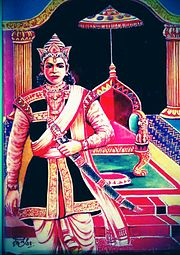
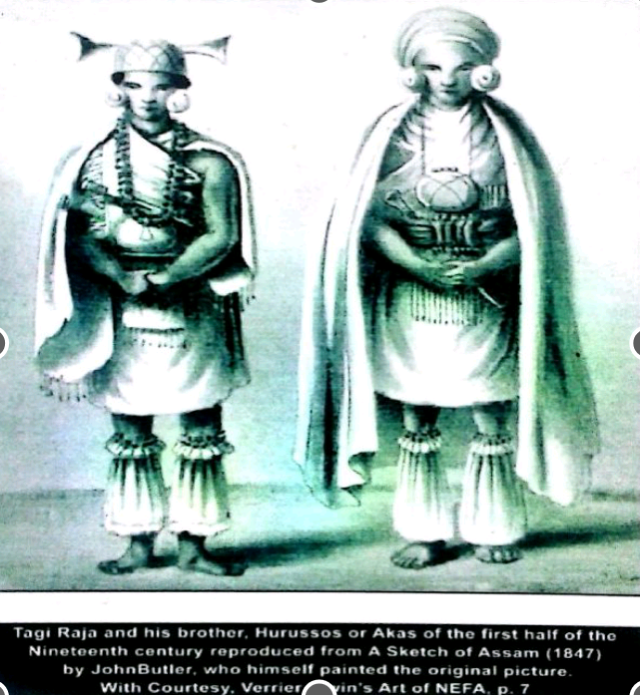

The history of Arunachal Pradesh is rich and complex, shaped by its geographical location, diverse tribal cultures, and interactions with neighboring regions like Tibet, Bhutan, and Assam. The state, located in the northeastern part of India, has been influenced by various historical events and cultures over the centuries, but much of its history has remained undocumented due to its remote and isolated nature. However, its history can be traced through legends, oral traditions, and the influence of neighboring kingdoms and empires.
Ancient Period:
The early history of Arunachal Pradesh is mostly intertwined with mythology and oral traditions. The region is believed to be mentioned in ancient Indian epics like the Mahabharata and Kalika Purana, where the land was referred to as "Prabhu Mountains" or the Land of the Rising Sun. According to legend, it is said that the sage Parashurama washed away his sins in the Brahmaputra River, near Arunachal Pradesh. The area was also associated with the Mishmi Hills, which are believed to be the site of King Bhishma's death in the Mahabharata. Archaeological evidence, such as stone inscriptions, reveals that parts of Arunachal Pradesh were under the influence of the Ahom Kingdom of Assam and the Chutia Kingdom in the early centuries. The region was also part of the trade routes between India, Tibet, and Southeast Asia.
The early history of Arunachal Pradesh is mostly intertwined with mythology and oral traditions. The region is believed to be mentioned in ancient Indian epics like the Mahabharata and Kalika Purana, where the land was referred to as "Prabhu Mountains" or the Land of the Rising Sun. According to legend, it is said that the sage Parashurama washed away his sins in the Brahmaputra River, near Arunachal Pradesh. The area was also associated with the Mishmi Hills, which are believed to be the site of King Bhishma's death in the Mahabharata. Archaeological evidence, such as stone inscriptions, reveals that parts of Arunachal Pradesh were under the influence of the Ahom Kingdom of Assam and the Chutia Kingdom in the early centuries. The region was also part of the trade routes between India, Tibet, and Southeast Asia.
Medieval Period:
During the medieval period, Arunachal Pradesh saw the influence of Tibetan Buddhism in its northern regions, particularly among the Monpa and Sherdukpen tribes. The spread of Buddhism occurred through interactions with the Tibetan Empire, and the region was influenced by Tibetan culture, which is still evident today in the monasteries and customs of the local people. Monasteries like Tawang Monastery, one of the largest Buddhist monasteries in India, played a significant role in shaping the culture and history of the area.
During the medieval period, Arunachal Pradesh saw the influence of Tibetan Buddhism in its northern regions, particularly among the Monpa and Sherdukpen tribes. The spread of Buddhism occurred through interactions with the Tibetan Empire, and the region was influenced by Tibetan culture, which is still evident today in the monasteries and customs of the local people. Monasteries like Tawang Monastery, one of the largest Buddhist monasteries in India, played a significant role in shaping the culture and history of the area.
British Colonial Era:
The modern history of Arunachal Pradesh began with British colonial expansion in the 19th century. The British first encountered the region when they expanded their rule over Assam in the early 1800s. In 1914, the British established the North-East Frontier Tracts, which included the area that is now Arunachal Pradesh, as part of their administrative efforts to secure their northeastern frontier. The region remained largely isolated, with little British control over its internal affairs, as the tribes continued to govern themselves according to their customs. The British made several expeditions into the region and delineated the boundary between Tibet and India, known as the McMahon Line in 1914. This line later became the source of dispute between India and China.
The modern history of Arunachal Pradesh began with British colonial expansion in the 19th century. The British first encountered the region when they expanded their rule over Assam in the early 1800s. In 1914, the British established the North-East Frontier Tracts, which included the area that is now Arunachal Pradesh, as part of their administrative efforts to secure their northeastern frontier. The region remained largely isolated, with little British control over its internal affairs, as the tribes continued to govern themselves according to their customs. The British made several expeditions into the region and delineated the boundary between Tibet and India, known as the McMahon Line in 1914. This line later became the source of dispute between India and China.
Post-Independence Era:
After India gained independence in 1947, Arunachal Pradesh became a key part of India's northeastern frontier. Initially, it was known as the North-East Frontier Agency (NEFA) and was administered under Assam. However, due to its strategic importance and ongoing border tensions with China, especially after the 1962 Sino-Indian War, India sought to develop and integrate the region more closely. In 1972, NEFA was renamed Arunachal Pradesh, and in 1987, it was granted full statehood. The name "Arunachal Pradesh" means "Land of the Dawn-Lit Mountains," reflecting its position as India's easternmost state.
After India gained independence in 1947, Arunachal Pradesh became a key part of India's northeastern frontier. Initially, it was known as the North-East Frontier Agency (NEFA) and was administered under Assam. However, due to its strategic importance and ongoing border tensions with China, especially after the 1962 Sino-Indian War, India sought to develop and integrate the region more closely. In 1972, NEFA was renamed Arunachal Pradesh, and in 1987, it was granted full statehood. The name "Arunachal Pradesh" means "Land of the Dawn-Lit Mountains," reflecting its position as India's easternmost state.


Modern Era:
Arunachal Pradesh remains a culturally diverse state with over 26 major tribes and hundreds of sub-tribes. It is also of strategic importance due to its proximity to Tibet (China), Bhutan, and Myanmar. Border disputes with China persist to this day, with China continuing to claim parts of Arunachal Pradesh as part of Tibet.
Arunachal Pradesh remains a culturally diverse state with over 26 major tribes and hundreds of sub-tribes. It is also of strategic importance due to its proximity to Tibet (China), Bhutan, and Myanmar. Border disputes with China persist to this day, with China continuing to claim parts of Arunachal Pradesh as part of Tibet.
Despite these challenges, Arunachal Pradesh has made significant progress in terms of infrastructure, education, and tourism. The state's rich heritage, with its vibrant festivals, tribal traditions, and natural beauty, continues to attract visitors and scholars alike. The culture of the people remains deeply connected to their land, and their way of life reflects a blend of ancient traditions and modern influences.